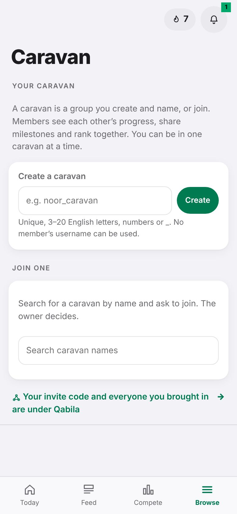
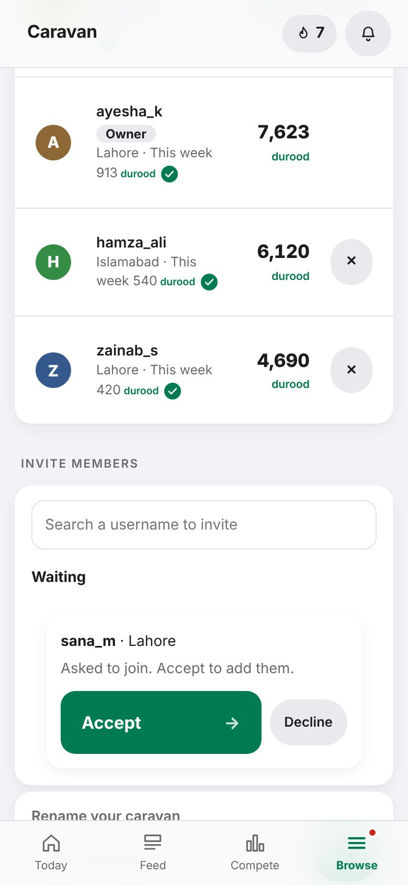
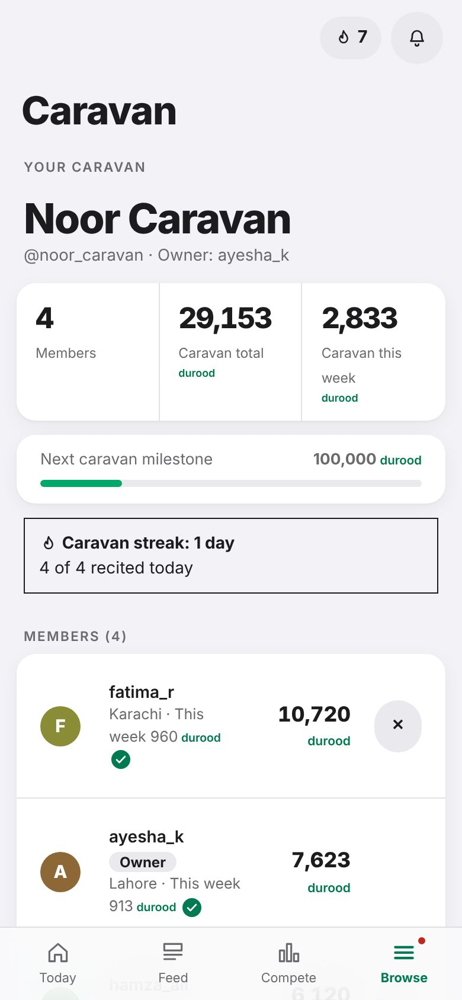

Together · Tutorial 8 of 13 · 4 min
Create or join a caravan
A caravan is a small group you name. Members see each other's progress and rank together.
A caravan (کارواں) is a group you create and name, or join: family, friends, a class or a mosque group. Members see each other's progress, share milestones and climb the caravan rankings together. You can be in one caravan at a time.
A caravan is a group you choose. Your Qabila is different: it is everyone who joined through your invite code. See tutorial 9.
Start your own caravan
Tap Browse, then Caravan.
Under Create a caravan, type a name such as noor_caravan and tap Create.
The name must be unique, 3 to 20 English letters, numbers or
_. It is how people find your caravan.
Optional: give it a display name in any language, like قافلۂ نور or Noor Caravan. It shows on the caravan page and in the rankings.
Under Invite members, search a member's username and invite them. They see the invitation on their Today screen and tap Join.
When someone asks to join your caravan, they appear under Waiting: tap Accept or Decline.

Join a caravan
- Go to Browse → Caravan.
- Under Join one, search the caravan's name and ask to join. The owner decides.
- Or, if someone invited you, a line on Today says so. Tap it, then tap Join.
Your caravan page
At the top: how many members, the caravan's total and this week's durood, and the next caravan milestone.
Below that, the caravan streak and who has recited today. A caravan streak starts once there are at least 3 members, and a day counts when half of them recite.
Then every member, with their week and a ✓ if they have recited today.

- The owner can rename the caravan and remove members (the ✕ beside a name).
- To leave, scroll to the bottom of the Caravan page and tap Leave this caravan.
- Caravans earn badges together, such as Caravan Week for a 7-day caravan streak.